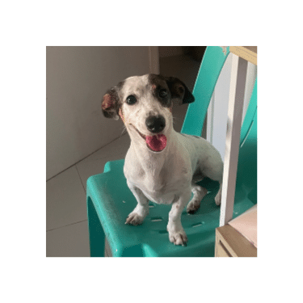
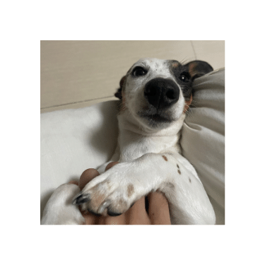
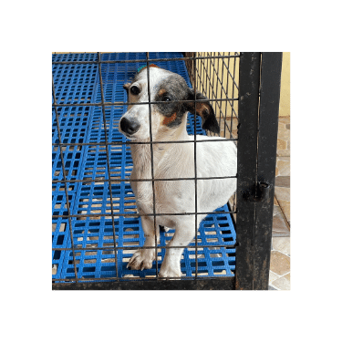
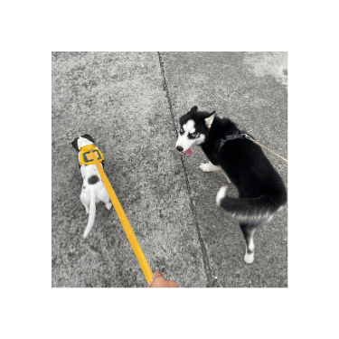
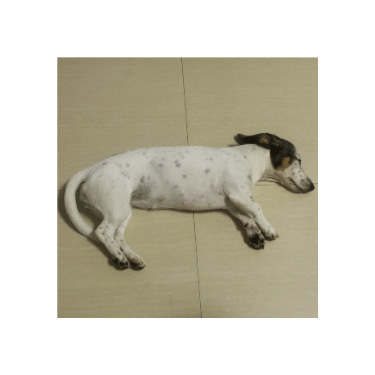

<!DOCTYPE html>
<html>
<head>
    <meta charset="UTF-8">
    <title>MAXENE</title>
    <link rel="stylesheet" type="text/css" href="styles.css">

</head>

    
    <footer>
        <p>&copy; Sausage Dog  </p>
    </footer>
</html>

<!DOCTYPE html>
<html>
<head>
    <meta charset="UTF-8">
    <title>Maxene The Sausage Dog</title>
    <link rel="stylesheet" type="text/css" href="styles.css">

    <script>
        function myFunction() {
           
            var link = 'https://www.canva.com/design/DAFtArpGHRk/IJZkaEHdxfnPgsHbLJW-0w/edit?utm_content=DAFtArpGHRk&utm_campaign=designshare&utm_medium=link2&utm_source=sharebutton';
            
            window.open(link, '_blank');
        }
    </script>


</head>

<body style="background-image:url(C:\Users\charlene\Downloads\bg.png)">
    <link rel="stylesheet" type="text/css" href="styles.css">
    <header>
       

        
        <nav>
            <ul>
                <li><a href="#home">Home</a></li>
                <li><a href="intro">Get to know me!</a></li>
                <li><a href="#about-me">More about me</a></li>
                <li><a href="#contact">Contact my hooman!</a></li>
            </ul>
        </nav>

        <button onclick="myFunction()">Tap to see!</button>
        


    </header>
    <section class="intro">
        <h2>Introduction</h2>
        <div class="intro">
            
            <h3>Hello Hoomans!</h3>
            <p>Woof, hello there! I'm pawsitively thrilled to have this oppawtunity to introduce myself to you. I'm a proud member of the canine community, and my wagging tail can't wait to tell you all about my paw-some breed. I may not have thumbs, but I've got a heart as big as a tennis ball, ready to fetch some fun facts about my breed. So, grab a treat, sit back, and let's embark on this tail-wagging journey together! </p>
                    <p>Exhibit 1</p>
        </div>
        
        <div class="intro">
            
            <h3>What breed Am I?</h3>
            <p>   Woof-hello! I'm a proud and pint-sized Dachshund, here to share the bark-tastic wonders of my delightful breed. Imagine a little hot dog with legs – that's me! Don't let my small stature fool you; I've got a bold personality and a heart as courageous as a lion. With my long body and short legs, I'm built for adventure, whether it's burrowing under blankets or bravely exploring the great outdoors. Known for my loyalty and charming demeanor, I'm the paw-fect companion for cuddles and playtime alike. So, grab a squeaky toy, and let's dive into the charming world of the Dachshund – where every day is an adventure worth wagging about! 
            </p>
            <p>Exhibit 2</p>
        </div>
        
        <div class="intro">
            
            <h3>Things I Hate</h3>
            <p>Woof, human, we need to have a serious pup-talk. You see, being cooped up in that cage feels like having my freedom put on a leash. I get it, you've got your reasons – maybe it's for my safety or because you're out and about. But, let me tell you, nothing ruffles my fur more than feeling confined.
            </p>
            <p>Exhibit 3</p>
        </div>
        
        <div class="intro">
            
            <h3>Things I Love!</h3>
            <p>Woof, hey there! Let me tell you about one of the absolute best things in my doggy world – walks! I mean, just hearing the jingle of the leash or seeing you grab my harness sends my tail into a full-blown wagging frenzy. It's like winning the doggy lottery every single time.
            </p>
            <p>Exhibit 4</p>
        </div>
        
        <div class="intro">
            
            <h3>My Favorite Hobby </h3>
            <p>Woof, let me tell you about the ultimate doggy delight – the joy of a good nap! Ah, the feeling of finding that perfect spot, circling a few times to get just the right fluffiness, and then plopping down for some serious ZZZs. It's like reaching the pinnacle of canine happiness.

            </p>
            <p>Exhibit 5</p>
        </div>
        
        
        
    </section>
    
    <section class="about-me">
        <h2>More about me</h2>
        <p>Hello there, paws and ears! I'm a proud Dachshund, and I've got a long body, short legs, and a personality as big as my bark. They say good things come in small packages, and that's definitely true for us Doxies! </p>
             <p>We were originally bred to hunt badgers, believe it or not! That's right, I may be pint-sized, but I've got the heart of a little hunter. Today, though, I'd much rather cuddle up on the couch with you and be the best four-legged friend you've ever had.</p>
                 <p>So, whether I'm on the scent of a fascinating smell or cozied up in your lap, life with a Dachshund is a delightful adventure. Ready for some tail-wagging fun with your new favorite hot dog? 🐾 </p>


    </section>
    
    <section class="contact">
        <h2>Contact my hooman!</h2>
        <p>If you have any questions, please feel free to contact my hooman:</p>

        <address>
            Email: <a href="mailto:chrlnmrqzzz@gmail.com">chrlnmrqzzz@gmail.com</a><br>
            Phone: 0975-983-5745
        </address>
    </section>
    
    <footer>
        <p>&copy; I hope you had fun getting to know me! Bye Hooman !!! </p>
    </footer>
</body>
</html>
